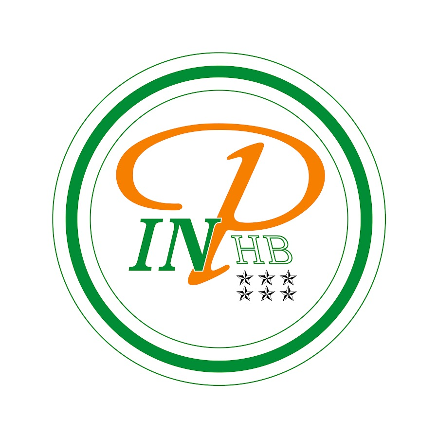
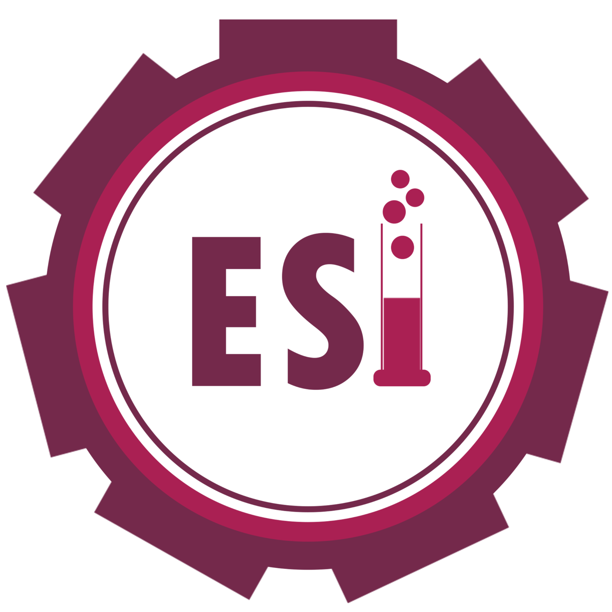
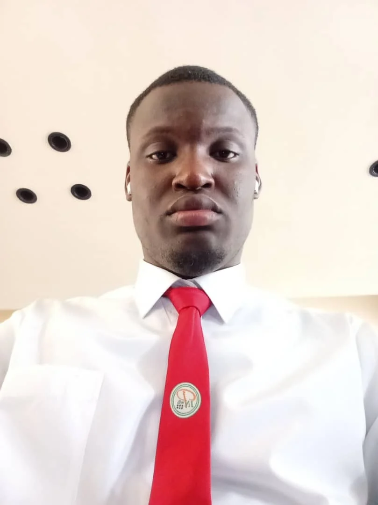

Étudiant en TS-STIC (Électronique, Informatique et Télécommunications) à l'ESI - INP-HB
Télécharger mon CVJe suis étudiant en TS-STIC option Électronique, Informatique et Télécommunications à l'INP-HB. Passionné par le développement web, les bases de données, les réseaux informatiques, l'électronique et les télécommunications. Je suis toujours motivé à apprendre de nouvelles technologies et à participer à des projets innovants.
Conception d'un système intelligent utilisant Arduino et la vision par caméra afin d'adapter automatiquement la durée des feux à la circulation.
Conception et manipulation de bases de données avec Oracle, MySQL (phpMyAdmin) et MongoDB.
Développement d'une plateforme web permettant aux étudiants et aux encadreurs de gérer les projets universitaires, partager des documents et organiser des réunions.
Email : nda.kouassi24@inphb.ci
Téléphone : +225 05 05 79 66 50
LinkedIn : Voir mon profil